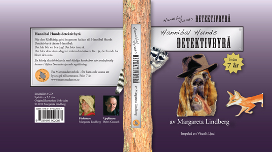

|
Startsidan
Böcker
Dramatik
Kultur-/barnprojekt
Margareta Lindberg Sigfrid |
|
 |
|
|
|
Det finns bra dagar och det finns dåliga dagar. När den Rödhåriga glider in genom luckan till Hannibal Hunds Detektivbyrå tänker mästerdetektiven: Det här blir en bra dag! Det blir inte så. Det blir den värsta dagen i hans liv. Ja, det kan faktiskt bli hans sista.
Hannibal Hund åtar sig att befria den Rödhårigas valp. Hon hålls fången av två argsinta vakthundar på traktens gåsfarm. Han anar han inte vad som väntar honom. Han hotas inte bara av vakthundarnas skarpa tänder och gåsfarmarens gevär. Någon sprider onda rykten. Mästerdetektiven anklagas för både stöld och bortövande av en ung gås. Hans vänner vill inte längre ha med honom att göra. Är det hans sekreterare, den fräcka tvättbjörnen Kleo, som ligger bakom? Upplösningen av mysteriet är överraskande. Inte minst för mästerdetektiven själv. En välskriven och spännande högläsningsbok med färgstarka karaktärer och en härlig, underfundig humor. Rolig både för barn och vuxna. Från 7 år. Finns på bibliotek och kan köpas från Adlibris. |
|
Ljudbok i en lysande uppläsning av Björn Granath.
Lyssna på 1:a kapitlet |
|
|